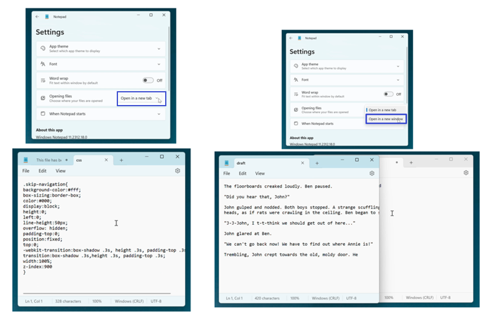
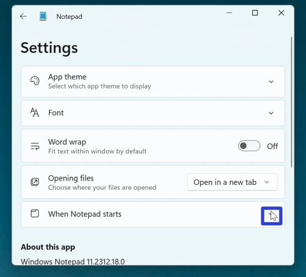
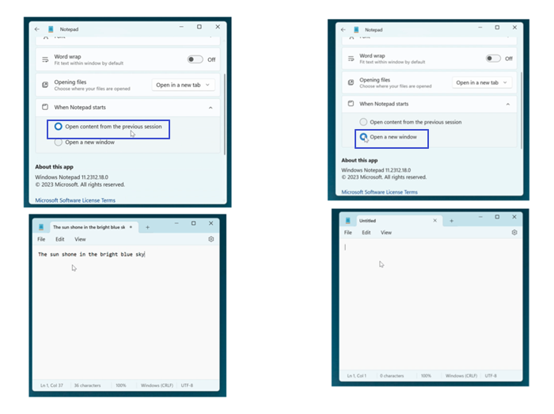

How to Edit the Microsoft Notepad App Settings (Windows 11)
This tutorial covers:
How to Choose How Files Are Opened
How to Adjust When Notepad Starts
No time to scroll down? Click through this presentation tutorial:
Watch a video tutorial:
How to Choose How Files Are Opened
- Step 1: First open Notepad. In the upper right click the “Settings” or gear button.

- Step 2: In the Settings window that opens, click the “Opening files” drop-down menu and select either “Open in a new tab” or “Open in a new window”. 
How to Adjust When Notepad Starts
- Step 1: Open Notepad. In the upper right click the “Settings” or gear button.
- Step 2: In the Settings window that opens, go to the far right side of the “When Notepad starts” section and click the down arrow. 
- Step 3: In the menu that opens, click to select “Open content from previous session” or “Open a new window”. 
- Note: “Open content from previous session” disables the saving confirmation window when closing Notepad, and reopened windows display the content from the previous session. In contrast, “Open a new window” enables the saving confirmation when closing Notepad, and reopened windows are blank.
Save a copy of these instructions for later with this free tutorial PDF.